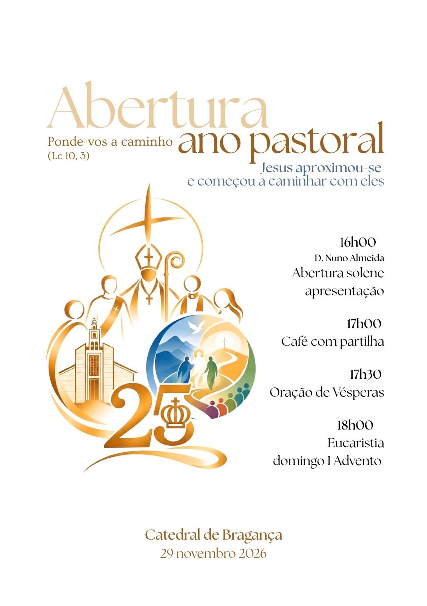

29 de novembro de 2026
Abertura do Ano Pastoral
Neste I Domingo do Advento, dia 29 de novembro, somos convidados a celebrar a abertura do novo Ano Pastoral, renovando a nossa fé, a nossa esperança e o compromisso de caminharmos juntos como Igreja.
Ler mais